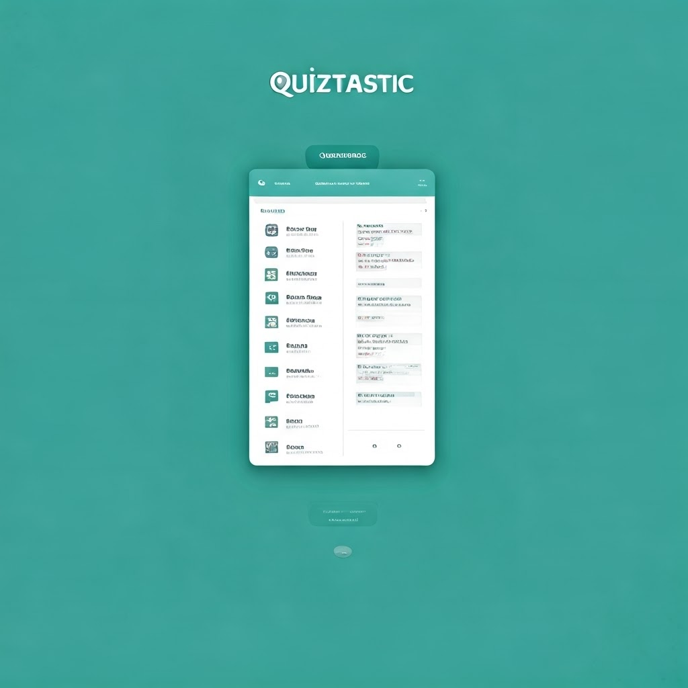

Quiztastic Website Plan
Project Overview
- Project Title: Quiztastic
- Project Goal: To create a fun and engaging online quiz platform where users can test their knowledge on a variety of topics.
- Target Audience: Anyone interested in taking quizzes for entertainment or learning purposes.
- Project Timeline:
Week 1 (October 18th - October 25th):
Day 1-3: Brainstorm quiz ideas, and start designing the basic layout and user interface.
Day 4-7: Develop the first few quizzes, focusing on different topics and question types.
Day 8-10: Test the quizzes on different devices and browsers, ensuring they work smoothly.
Week 2 (October 26th - October 29th):
Day 1-3: Finalize the website design, including branding, color scheme, and navigation.
Day 4-7: Set up the website hosting and domain name.
Day 8-10: Publish the website and start promoting it on social media.
Site Structure

Page Hierarchy
- Home Page
- Quiz Categories
- Quizzes (Individual Quiz Pages)
- User Profile
- Quiz Creation
- Leaderboard (Optional)
Content Outline
- Home Page:
- Welcome message and brief introduction to Quiztastic.
- Featured quizzes with eye-catching images or descriptions.
- Links to Quiz Categories.
- Quiz Categories:
- List of quiz categories (e.g., General Knowledge, History, Science, etc.).
- Links to quizzes within each category.
- Quizzes:
- Quiz title and description.
- Multiple-choice questions with varying difficulty levels.
- Scoring system and progress tracker.
- Feedback after each question (correct/incorrect).
- Final score and summary of results.
- User Profile:
- User account creation/login.
- Progress tracking for quizzes.
- Score history and favorite quizzes.
- Optional: Profile customization.
- Quiz Creation:
- Option to create custom quizzes.
- Ability to add questions, answer options, and categories.
- Option to share created quizzes with others.
- Leaderboard (Optional):
- Display of top scorers in each category.
Design Considerations
Site Name
Site Name: Quiztastic
Reason: The name is catchy, memorable, and directly reflects the website's purpose – providing quizzes.
Optional Domain Availability: quiztastic.com, quiztastic.org (check availability)
Site Purpose
Purpose: Quiztastic aims to be a fun and engaging online platform for users to test their knowledge on various topics. It provides a user-friendly interface for taking quizzes, tracking progress, and creating custom quizzes to share with others.
Scenarios
- Scenario 1: A user wants to take a quick quiz on history. They navigate to the "History" category, choose a quiz, and take it. After completing the quiz, they see their score and a summary of correct/incorrect answers.
- Scenario 2: A user wants to create their own quiz about pop culture. They navigate to the "Quiz Creation" section, add questions, answer options, and a category. They then share their quiz with friends.
- Scenario 3: A user wants to track their progress in different quiz categories. They create an account, take quizzes, and view their score history and favorite quizzes in their profile.
Color Schema
- Primary Color: #007bff (Blue) - Used for buttons, active links, and highlights
- Secondary Color: #f2f2f2 (Light Gray) - Used for background and subtle elements
- Accent Color: #333 (Dark Gray) - Used for headings and text contrast
Typography
- Heading Font: Arial - Used for all headings (h1, h2, h3, etc.)
- Body Font: Arial - Used for all body text
- Button Font: Arial - Used for buttons and interactive elements
Functionality
- Features:
- Quiz taking with multiple-choice questions.
- Scoring system and progress tracking.
- Feedback after each question (correct/incorrect).
- Final score and summary of results.
- User account creation and login.
- User profile management (score history, favorite quizzes).
- Quiz creation and sharing.
- Optional leaderboard feature.
- Technology Stack: HTML, CSS, JavaScript
- Accessibility:
- Use of ARIA attributes for screen readers.
- Keyboard navigation for all interactive elements.
- High contrast color combinations for readability.
Content Strategy
- Content Types:
- Quiz questions and answers.
- Quiz descriptions and instructions.
- User profile information.
- Blog posts or articles related to quizzes (optional).
- Content Creation:
- Internal team creation of initial quizzes.
- User-generated content for custom quizzes.
- Content moderation to ensure quality and appropriateness.
- SEO:
- Use of relevant keywords in quiz titles, descriptions, and content.
- Optimized meta descriptions and titles for search engines.
- Structured data markup for quiz information.
Maintenance and Updates
- Hosting: [Specify your hosting plan]
- Security:
- Secure user authentication and data storage.
- Regular security updates and vulnerability scans.
- Updates:
- Regular addition of new quizzes and categories.
- Content moderation to ensure quality and freshness.
- Bug fixes and performance optimization.
Wireframe
Mobile View

Desktop View